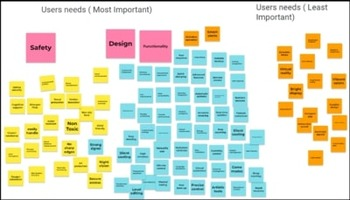
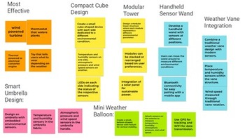
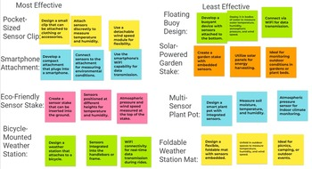

Conducting separate individual research based on our inspired products from other vendors, our team was able to pitch up a list of customer needs that is neatly pilled into separate categories below. 
Our product must sense at least 2 of the following environmental conditions via at least 2 separate serial sensors: temperature, humidity, atmospheric pressure, wind speed, and based on our recent studies on our user needs we are mainly going to be focusing on the safety, design, and functionality of our future product. Features of our product requirement will include secure access, easy usage, durability, secure software, and accurate tracking. 
